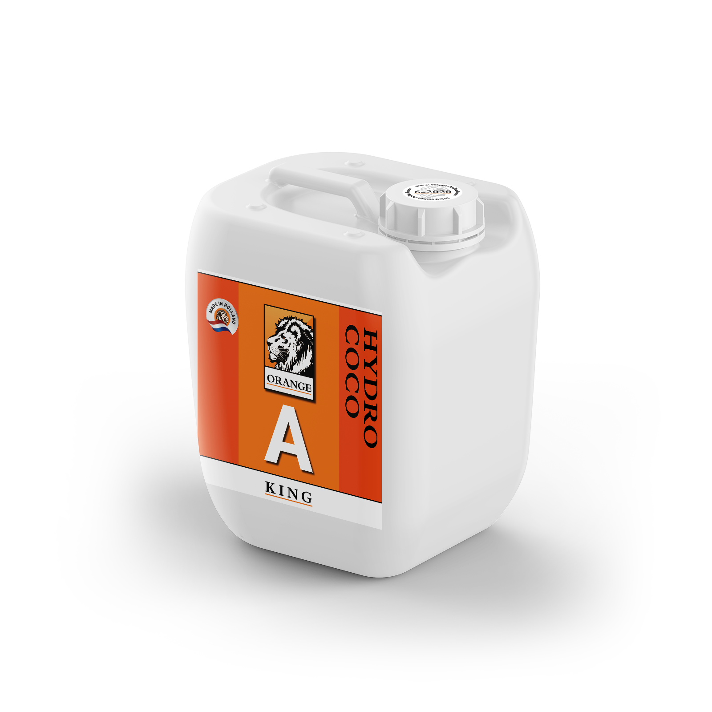

Hydro A+B
Orange Hydro A wurde speziell für Züchter entwickelt, die auf inerten Substraten (z. B. Kokos, Steinwolle) anpflanzen. Das Produkt besteht aus Kalzium, Stickstoff und Spurenelementen wie: Bor, Kupfer, Eisen, Mangan, Molybdän und Zink.
Orange Hydro B ist ein ergänzendes Produkt, um der Ernährung der Pflanzen eine vollständige Palette an Nährstoffen hinzuzufügen. Die Hauptbestandteile dieses Düngemittels sind: Phosphor, Kalium, Schwefel und Magnesium. Orange Hydro B besteht weiterhin aus den wichtigsten Spurenelementen.